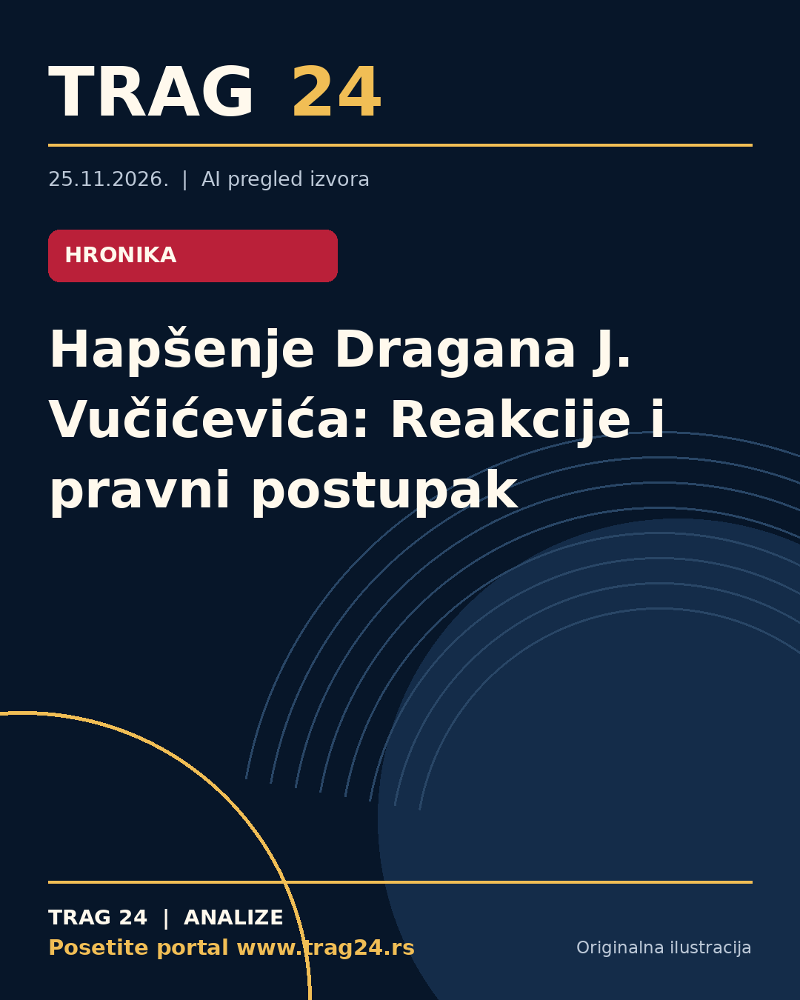

Hapšenje Dragana J. Vučićevića: Reakcije i pravni postupak

ŠTA SE DOGODILO
Dragan J. Vučićević, direktor i glavni urednik televizije Informer, zadržan je po nalogu Drugog osnovnog javnog tužilaštva u Beogradu zbog osnova sumnje da je izvršio krivična dela izazivanje panike i nereda u produženom trajanju i ometanje pravde.
HRONOLOGIJA
Po nalogu tužilaštva, policija je zadržala Vučićevića, a on će, uz krivičnu prijavu, biti priveden na saslušanje pred javnim tužiocem. Rešenje o zadržavanju Vučićevića potpisao je tužilac Marko Pljakić. Vučićević je nakon prijema rešenja odbio da potpiše dokument navodeći da je reč o političkom progonu.
ŠTA NAVODE IZVORI
Novinar i urednik Saša Bakić ocenio je hapšenje kao blagu vest i najavio da je ovo samo početak odgovornosti za celu televiziju i njenog vlasnika, rekavši da će to raditi istražni organi. Poslanik Ilija Srdanović istakao je da će se postupanje prema svima koji prekrše zakon vršiti u skladu sa Ustavom i zakonom Republike Srbije. Aleksandar Vučić, lider Srpske napredne stranke i opozicije, kritikovao je postupak hapšenja nazivajući ga političkim progonom i uporedio sa neprocesuiranjem drugih slučajeva o kojima se govorilo u javnosti.
ŠTA JE POTVRĐENO
Potvrđeno je da je po nalogu Drugog osnovnog javnog tužilaštva u Beogradu policija zadržala Dragana J. Vučićevića zbog sumnje da je izvršio navedenih krivičnih dela. Vučićević se nalazi u fazi saslušanja, a pravni postupak je u toku. Dokument o zadržavanju je izdat i deo je zvanične procedure.
ŠTA NIJE POTVRĐENO
Nije potvrđeno da li je Vučićević počinio krivična dela za koja se sumnjiči, jer tužilaštvo i policija vode istragu. Takođe, navodi o političkom progonu ostaju stavovi pojedinaca i nisu pravno potvrđeni. Takođe, informacije o eventualnim dodatnim osumnjičenima ili povezanosti drugih aktera nisu zvanično objavljene.
ŠTA OSTАJE OTVORENO: Ostaje otvoreno dalje vođenje istrage i utvrđivanje svih činjenica koje se odnose na navode o izazivanju panike, nereda i ometanju pravde. Nije poznat dalji tok postupka, niti mogući pravni ishod za Vučićevića i ostale potencijalno umešane. Takođe, mogućnosti političkih posledica ili reakcija relevantnih institucija i javnosti ostaju predmet daljih događaja.
Izvori
- https://www.novosti.rs/vesti/politika/1674600/bakic-srdanovic-hapsenju-dragana-vucicevica-blaga-vest-ovo-samo-pocetak
- https://www.blic.rs/vesti/politika/vucic-pokazao-papir-na-kom-pise-zasto-je-uhapsen-dragan-j-vucicevic/2vys2tf
Ova analiza je pripremljena uz pomoć veštačke inteligencije na osnovu javno dostupnih izvora. Navodi izvora nisu nužno nezavisno potvrđeni.